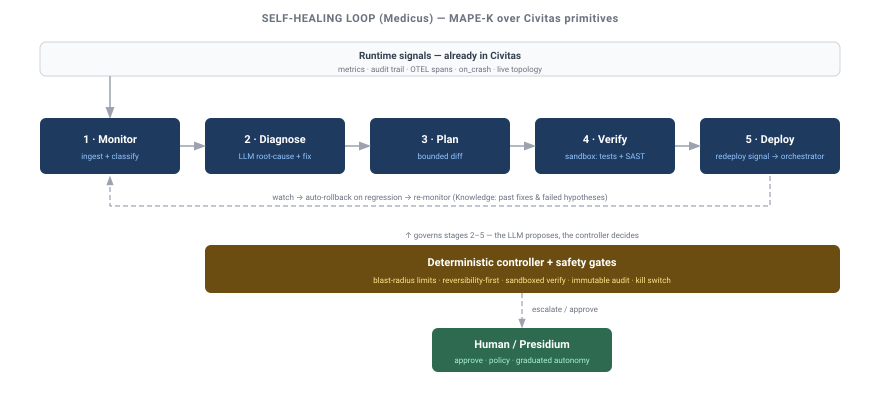
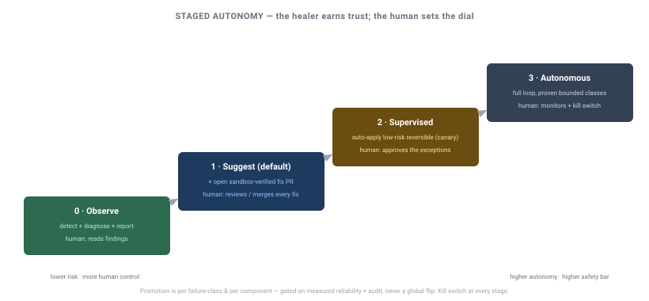

Design: Self-Healing / Autonomous Remediation¶
Status: DRAFT — Oracle-reviewed 2026-07-04, revised per critique. Not approved; build P0–P1 only when greenlit.
Author: Sisyphus
Date: 2026-07-04
Verdict (Oracle): feasible-with-caveats as an SRE copilot (P0–P1); the deploy primitive is
orchestrator-first, in-runtime canary deferred. See "Oracle review" below.
Reference demo: medicus-demo.md — the P0+P1 hero demo (detect → diagnose → verified PR).
One-line framing: Civitas already gives agents fault-tolerance (crash → supervised restart). Self-healing extends that from "restart the same code" to "diagnose the fault, propose a code fix, verify it in a sandbox, and roll it out safely" — under staged autonomy with a human able to set exactly how much the system may do on its own. This is an SRE-agent capability layered on the runtime, not Erlang-style in-place hot code loading (which Python cannot do safely).
Oracle review — verdict & required revisions (2026-07-04)¶
Oracle pressure-tested this design against the runtime code. Verdict: feasible-with-caveats as an SRE copilot (P0–P1); not as described for the deploy primitive (D1/P2). Detect → diagnose → sandboxed-verified PR is buildable on existing seams; the "blue-green worker restart" primitive was wishful and is reframed here. This section supersedes any conflicting canary/blue-green framing below.
D1 reframed — no in-runtime code swap, no overlapping canary:
- In-process reload is impossible — every class load is importlib.import_module → sys.modules cache
(supervisor.py:588); restart reuses the same instance (supervisor.py:332-348). New code exists
only in a new OS process.
- The registry forbids two same-named instances (registry.py:119-120,191-195) and the runtime
silently swallows the collision (runtime.py:712-713) → no overlapping canary; today's reality
is stop-then-start (brief downtime).
- Worker restart drops in-flight mailbox messages (process.py:977, worker.py:202), reply
routing breaks mid-cutover, retries aren't idempotent, and cross-process state continuity requires
a shared durable store (default is in-memory, state.py:33).
- Resolution (Q1): deploy is orchestrator-first — civitas emits a typed redeploy vX request +
best-effort drain; k8s/systemd does the rollout + health-check + rollback. In-runtime canary
(versioned names + alias routing) is a large separate primitive, deferred / cut from v1.
Safety hardened (was necessary-but-naive):
- Verification anchored to reality (D8): the failing test must be derived from the real signal
(reproduce the actual crash/trace/input) — an LLM-authored test proves nothing. Require the full
existing suite + coverage on changed lines. Restrict auto-deploy to crash-class faults until a
correctness signal (golden output / shadow compare) exists — canary metrics are error/latency-only
(metrics.py:17-30), blind to silent wrong-output regressions.
- Injection is structural (D9): the deterministic controller never lets free-text telemetry
authorize a transition — only typed/signed signals drive the machine; logs/traces/audit text are
evidence for humans, not control input (telemetry is attacker-influenceable, bus.py:105-120).
- Self-guardrail isolation enforced, not prompted (Q5): healer/governance/CI paths mounted
read-only (sandbox/config.py:18-23) plus a deploy-gate that refuses diffs touching them;
Medicus's own supervision isolated so a bad self-fix can't disable the healer or its kill switch.
- Deploy/fix circuit breaker (D10, core): global fix-rate limit + auto-freeze-on-regression +
kill-switch-to-known-good. Restart budgets today are per-crash only (supervisor.py:270-293).
Boundary corrected (D2): the safety floor (kill switch, protected-path refusal, circuit
breaker) is runtime safety and ships in core/contrib — OSS is safe-by-default without Presidium.
The governance seams already exist (on_spawn_requested, Registry.add_listener, suspend/resume,
audit), so the minimal built-in gate needs no Presidium dependency; Presidium adds policy richness on
top.
Phasing re-sized: insert a shadow stage (generate + verify a fix, measure precision, no PR) between P0 and P1; split P2 into P2a = orchestrator rollout + health-check + auto-rollback (cheap, standard) and ~~P2b = in-runtime canary~~ cut from v1.
Must-fix before build-ready¶
- D1 / Q1 reframed orchestrator-first (done above).
- Drop overlapping canary for v1 — accept brief downtime + orchestrator rollback.
- Verification anchored to the real signal + full suite + coverage-on-diff; auto-deploy crash-class only.
- Structural guardrail isolation — read-only mounts + deploy-gate refusing healer/governance/CI diffs.
- Deploy/fix circuit breaker + kill-switch-to-known-good in core (Presidium-independent).
- Runtime bug to fix first:
DynamicSupervisor._handle_spawnwires deps but omits_audit_sinkand_metrics(supervisor.py:598-606vscomponents.py:84-93) — a dynamically-spawned Medicus would run with no audit trail or metrics. Fix the wiring, or mandate Medicus be a static child.
Build recommendation: ship P0 (observe) + P1 (suggest → verified PR) only for now — ~80% of the value at ~20% of the risk, mostly on existing primitives. Gate P2+ hard.
Motivation¶
The customer ask: an agent that watches logs / traffic / audit trail / OTEL, has access to the codebase, detects bugs, raises fixes, deploys them, and reloads the affected component — "something Erlang OTP does."
Civitas is unusually well-positioned for the runtime half of this: it is an OTP-inspired supervision runtime with first-class observability and dynamic process control. The gap is the closed loop (detect → diagnose → fix → verify → deploy → rollback) and, above all, the safety envelope that makes autonomous code changes responsible rather than reckless.
Reconciliation with what exists (honest inventory)¶
We do NOT have hot code reload today. grep for reload|hot.?swap|code_change|importlib.reload
across civitas/ returns zero matches; supervisor restart reuses the same instance and never
re-imports the class; deploying fixed code means rebuild image + restart process.
What already exists — the OTP-shaped skeleton the loop builds on:
| Capability | Where | Use in self-healing |
|---|---|---|
| Supervision: crash → restart (ONE_FOR_ONE/ALL/REST, backoff) | supervisor.py |
Baseline fault-tolerance; restart budget = a failure signal |
runtime.on_crash(cb) → (agent_name, exc) |
runtime.py |
Detect crashes (push) |
Metrics (MetricsSink push, MetricsCollector.snapshot pull) |
observability/metrics.py, dashboard/collector.py |
Monitor latency/error/throughput |
Audit trail (AuditSink, message.route on every message) |
audit/ |
Monitor behavior; immutable audit for the loop |
OTEL spans (send/recv/handle/llm/tool/supervisor.restart) |
observability/tracer.py |
Monitor/diagnose traces |
| Live topology API (HTTP) | topology_server.py |
Monitor agent health (pull) |
| Dynamic spawn/despawn/stop | supervisor.py, process.py, runtime.py |
Deploy via new instance; drain old |
Durable state (checkpoint() + StateStore) |
process.py, plugins/state.py |
State continuity across restart |
self.llm.chat(tools=…) |
plugins/model.py |
Diagnose + generate fix |
| Tools / MCP / sandbox config | plugins/tools.py, process.py connect_mcp, sandbox/ |
Fix (read/write/test/git); sandbox via fabrica bubblewrap |
Every monitoring signal is consumable by an ordinary AgentProcess without monkey-patching.
The hard truth about "reload" (OTP vs Python) — decides D1¶
Erlang/OTP hot code upgrade (two-version code, gen_server:code_change/3 state migration,
sys:suspend → change_code → resume, fully-qualified-call switching) is a BEAM VM feature. Python
has no safe equivalent:
importlib.reload()is fundamentally unreliable — existing instances keep the old class,from x import yaliases don't update, C-extensions break, and running coroutines keep old code (per the CPython docs and jurigged/reloadium's own caveats).- Every production Python framework (uvicorn
--reload, Django, GunicornHUP) reloads by full process restart, never in-place swap.
Therefore the "reload the affected component" step = spawn-new-process + drain + retire-old (blue-green at the worker/process level). This is not a downgrade of the OTP idea — it is the same supervisor-restarts-child-with-new-code pattern, at process granularity instead of module granularity. It maps cleanly onto Civitas's worker + supervision model.
Architecture — the self-healing loop¶

A MAPE-K loop (Monitor → Analyze → Plan → Execute → Knowledge), run by a dedicated healer agent (working name Medicus), with a deterministic controller wrapping the LLM (the LLM proposes; the controller decides — see D5):
- Monitor — subscribe to the signals above (metrics/audit/OTEL/on_crash) + poll topology. Feed a rolling window into a failure classifier.
- Analyze / Diagnose — on a qualifying signal, gather evidence (failing trace, stack, correlated logs, the offending code via a filesystem tool) and ask the LLM for a root-cause hypothesis + candidate fix. Screen all tool/telemetry inputs for prompt injection first.
- Plan — produce a bounded change: a minimal diff within blast-radius limits, plus the verification it must pass. Classify reversibility.
- Verify — apply the diff in an isolated sandbox (fabrica bubblewrap / ephemeral worker), run the affected tests + static analysis. Fail → rollback snapshot, retry with budget, else escalate.
- Execute / Deploy — per the autonomy stage (below): open a PR (default), or canary-deploy via a new worker with the fixed code and drain the old one, watching health.
- Rollback / Verify-in-prod — automatic rollback on health/metric regression; post-hoc watch for recurrence; write the outcome (and failed hypotheses) back to Knowledge.
Where each piece lives (D2 — respects boundary.md)¶
- civitas (core): the monitoring surfaces (exist), a new
restart-with-new-codeworker primitive (blue-green drain), dynamic spawn/despawn, sandbox config, and a generic remediation/health hook. Runtime only — no LLM, no policy. - civitas-contrib (or a new
medicuspackage): the healer agent + code-fix tools (filesystem/subprocess/git) + failure classifier. Application-level, depends on core. - presidium (governance): approval gates, fix-policy (what may be changed), budgets, and graduated-autonomy enforcement + audit. The safety envelope is a governance concern, exactly Presidium's role. A minimal built-in gate ships for OSS users without Presidium (see Q4).
Staged autonomy model (D3)¶

Autonomy is a dial, defaulting to the safest useful setting. A component earns higher autonomy only after proven behavior:
| Stage | What the healer may do | Human role |
|---|---|---|
| 0 · Observe | Detect + diagnose + report (no changes) | Reads findings |
| 1 · Suggest (default) | Everything in Observe + open a fix PR (sandbox-verified) | Reviews/merges every fix |
| 2 · Supervised | Auto-apply low-risk, reversible fixes via canary; HITL for anything else | Approves the exceptions; watches |
| 3 · Autonomous | Full loop for proven, bounded failure classes; canary + auto-rollback | Monitors dashboards; kill switch |
Progression is per-failure-class and per-component, gated on metrics + audit review — never a global flip.
Safety controls (non-negotiable — from AIOps prior art)¶
Reversibility beats approval clicks for high-consequence, short-window actions; humans review the rare irreversible ones. Tiered:
- Structural: sandboxed validation; canary + automatic rollback (reversible actions); blast-radius limits (max diff, no new dependencies, no schema/migration auto-apply, protected paths); immutable audit; kill switch that leaves a known-good state.
- Control-flow (D5): a deterministic state machine, not the LLM, owns the critical path (auto-apply-if-generated, auto-commit-if-tests-pass, force-progress after N reads, bounded retries). Reliability of comparable systems jumped ~10%→90% precisely by taking the LLM out of control.
- Classification (D6): escalate — do not auto-fix — infrastructure/resource failures (a real cautionary case: bumping memory weekly instead of fixing a leak), security-policy changes, and anything without a clear reproduction + a test that goes red→green.
- Oversight: confidence + risk routing to an approval queue (HMAC-locked payloads); maker-checker for irreversible actions; a separate reviewer/classifier that only sees user-intent + tool calls (defends against the agent talking itself into a bad action); prompt-injection screening of telemetry/tool outputs before they enter the healer's context.
New primitives to build (the gaps)¶
restart-with-new-code(core) — a worker-level blue-green swap: start a fresh worker importing the new code, drain/hand-off, retire the old. This is the only genuinely missing runtime piece.- Code-fix toolset (contrib) —
read_file/write_file/run_command/gittools (≈4 smallToolProviders) or MCP filesystem/bash servers, executed under sandbox. - Failure classifier (contrib) — maps a signal to {logic-bug (remediable) | infra/resource (escalate) | security (escalate) | flaky (observe)}.
- Canary + auto-rollback controller (core/contrib) — health-watch + revert.
- Governance hooks (presidium) — policy + approval + graduated-autonomy enforcement + audit.
Decisions¶
| # | Decision | Resolution |
|---|---|---|
| D1 | Deploy / "reload" mechanism | Orchestrator-first new-process deploy — emit a typed redeploy vX signal + best-effort drain; k8s/systemd rolls out + health-checks + rolls back. No in-place reload (Python) and no in-runtime overlapping canary in v1 (registry is 1-name→1-address). |
| D2 | Component boundaries | Runtime + primitive in core; healer agent + tools in contrib; governance/approval in presidium (minimal built-in gate for OSS). |
| D3 | Autonomy | Staged (Observe → Suggest → Supervised → Autonomous); default Suggest (PR + HITL). Per class/component. |
| D4 | Deploy safety | Reversibility-first: orchestrator rollout + health-check + auto-rollback; maker-checker only for irreversible ops. Auto-deploy restricted to crash-class faults until a correctness signal exists. |
| D5 | Control loop | Deterministic state machine wraps the LLM; LLM proposes, controller decides; bounded retries + anti-loop. |
| D6 | Scope of auto-fix | Logic bugs with a red→green test only. Escalate infra/resource/security. |
| D7 | Verification | Sandboxed test + static-analysis gate before any deploy (see D8 for anchoring). |
| D8 | Verification anchoring | Failing test derived from the real signal (reproduce actual crash/trace/input) + full suite + coverage on changed lines. LLM-authored-only tests are insufficient. |
| D9 | Injection defense | Deterministic controller transitions only on typed/signed signals; free-text telemetry is human evidence, never control input. |
| D10 | Safety-floor location | Kill switch, protected-path deploy-gate, and fix/deploy circuit breaker ship in core/contrib (OSS safe-by-default); Presidium adds policy richness. |
Open questions¶
- Q1 — Does
restart-with-new-codelive in core (single-deployment blue-green) or defer to the orchestrator (k8s rolling update)? Proposed: a thin core primitive and a documented orchestrator path for clustered deployments. - Q2 — Name: Medicus (Latin physician, fits Civitas/Presidium/Fabrica) vs plain
SelfHealingAgent. - Q3 — Default fix output per stage: PR-only (Suggest) → canary (Supervised) → auto (Autonomous).
- Q4 — Minimum viable governance for OSS users without Presidium (a built-in HITL gate + audit), vs full policy via Presidium.
- Q5 — Should Medicus itself be supervised/sandboxed so a broken healer can't cascade (it must not be able to "fix" or disable its own guardrails)?
Non-goals¶
- True OTP in-place module hot-swap /
code_change/3live migration. - Auto-remediating infrastructure, resource, or security-policy issues (always escalate).
- Auto-applying database migrations or other irreversible operations.
- Multi-service refactors or dependency changes without human sign-off.
Implementation phases (staged, safety-first)¶
- P0 — Observe: monitoring adapters + failure classifier; detect + report only. Zero risk; validates detection precision (which gates everything downstream).
- P0.5 — Shadow: generate + sandbox-verify a fix but do not open a PR — measure fix precision before humans get PR spam.
- P1 — Suggest: diagnose + reproduce-from-real-signal + sandboxed verify (full suite + coverage-on-diff) → PR (HITL). The code-fix toolset + verification gate. ← smallest safe build (P0+P1).
- P2a — Deploy (orchestrator): emit a typed
redeploy vXsignal + best-effort drain; k8s/systemd does the rollout + health-check + auto-rollback. Plus the core safety floor (protected-path deploy-gate, fix/deploy circuit breaker, kill switch). - ~~P2b — in-runtime canary~~ (cut from v1): versioned names + alias routing is a large distributed-systems primitive; defer until there is a real need.
- P3 — Supervised: auto-apply low-risk crash-class reversible fixes behind policy + graduated autonomy.
- P4 — Autonomous (bounded): proven failure classes only, with kill switch + post-hoc validation.
Each phase is independently shippable and gated on the previous phase's measured reliability.